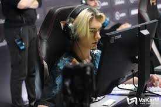
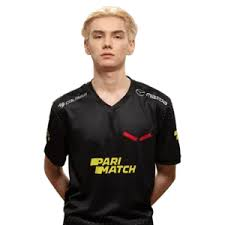
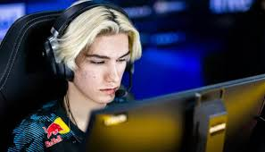

Жданов начал карьеру в 2020 году в возрасте 16 лет. Первой командой,
с которой Игорь отобрался на турнир, освещаемый HLTV, стала SpeedRunners.
Помимо w0nderful, в её составе также играл на тот момент неизвестный Владимир
«Woro2k» Велетнюк. После SpeedRunners Жданов играл в украинских коллективах
MAJESTY[4], Project X и Trasko Esports, с ними он заработал свои первые призовые.
Вместе с остальными игроками Игорь покинул Trasko Esports, так как по их мнению,
организация не выплачивала им призовые. Некоторые игроки, включая Игоря, 8 декабря
2021 года перешли в HellRaisers[5]. Спустя 3 месяца организация объявила о приостановке
своей деятельности из-за начавшегося вторжения России на Украину, и Игорь стал свободным
агентом[6]. Тогда же FACEIT помогла w0nderful выехать за территорию Украины в Берлин,
предоставила ему компьютер и пригласила во вторую по значимости лигу FPL-C